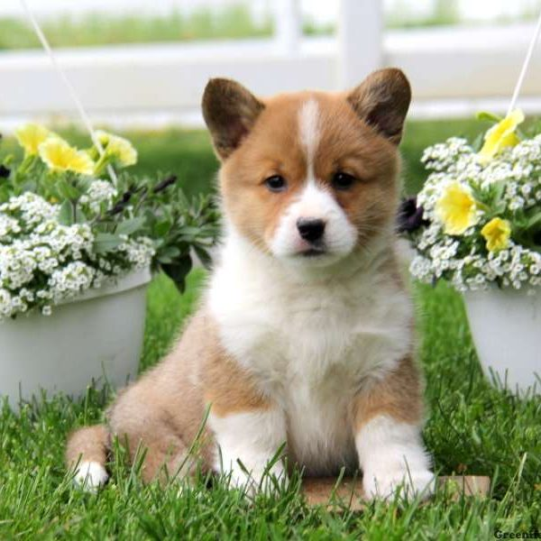

- More common of the two breeds
- Straighter, lighter legs
- No tail! Pointier ears though
- Favorite of the Queen
- Larger and heavier
- Turned out front feet
- Generally less outgoing than Pembrokes
- Have tails
| Pembroke Welsh | Cardigan Welsh | |
|---|---|---|
| Adult | |
|
| Puppy(!) |  | |
|
|